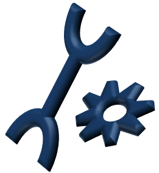

The heart!

Function of the heart
What does the heart do?
Your heart is a big pump. It works by pumping the blood to the lungs so it can be filled with oxygen and then back around the body to your muscles and organs. For example, when you have to sprint in PE class, the muscles in your legs and arms need lots of oxygen to keep them strong and fast. In response, your heart beats faster to pump oxygen filled blood from the lungs to your muscles. At the same time, your muscles produce salts and waste that spill into the blood. That blood then has to circle back to the heart and so the cycle continues.
What does your heart look like?
Your heart is about the same size as a closed fist.
How many times does your heart normally beat per minute?
It depends how old you are but if you are between 5 and 12 it is usually 80-120 beats per minute!!
How many times will your heart beat in your lifetime
Can be over 3 BILLION times if you live until you are 80!
What sounds does my heart make?
It makes two sounds which sound like LUB DUB. Press below to hear